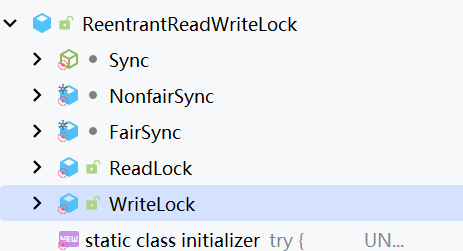
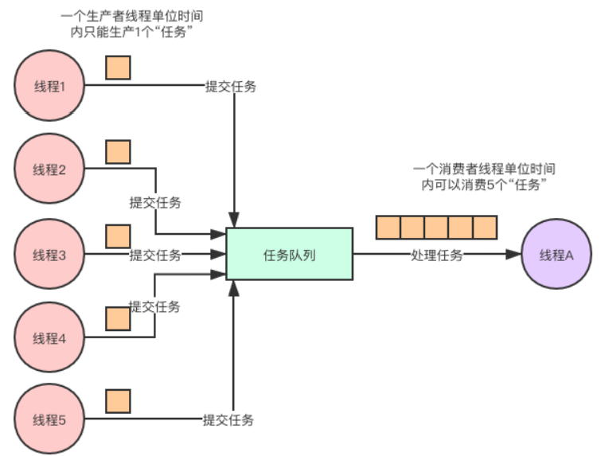

深入学习Java并发
前言
罗列java并发体系中的点点滴滴
整体并发体系可以参考下图知识图谱所示，未来一些边边角角持续更新中

理论相关
并发三大特性
并发编程BUG的源头，都归纳为三个问题：可见性、原子性与有序性问题
JMM相关
Java虚拟机规范中定义了Java内存模型（Java Memory Model，JMM），用于屏蔽掉各种硬件和操作系统的内存访问差异，以实现让Java程序在各种平台下都能达到一致的并发效果。
JMM规范了Java虚拟机与计算机内存是如何协同工作的：规定了一个线程如何和何时可以看到由其他线程修改过后的共享变量的值，以及在必须时如何同步的访问共享变量。
JMM描述的是一种抽象的概念，一组规则，通过这组规则控制程序中各个变量在共享数据区域和私有数据区域的访问方式。
JMM是围绕原子性、有序性、可见性展开的。

关联两个疑问
- 本地内存中的变量数据什么时候刷新到主内存中？答：不会立马刷新，而是有一定时间。
- 本地内存中的变量数据什么时候会失效？答：有缓存淘汰时间，淘汰之后会立马read主内存中新的值。
例子中，使用Thread.yield()也可以保证可见，原因：这个方法释放了当前线程的CPU时间片，即存在上下文切换过程，再次获得时间片的时候，会加载上下文，因此会重新读主内存中的值。
可见性问题
当一个线程修改了共享变量的值，其他线程能够看到修改的值。
Java 内存模型是通过在变量修改后将新值同步回主内存，在变量读取前从主内存刷新变量值这种依赖主内存作为传递媒介的方法来实现可见性的。
如何保证内存可见性：
- 通过 volatile 关键字保证可见性。
- 通过 内存屏障保证可见性。
- UnsafeFactory.getUnsafe().storeFence()，与volatile底层是同一个实现，所以可以。
- 通过 synchronized 关键字保证可见性。能够的原因：底层还是靠storeFence内存屏障实现的。
- System.out.println(); // 这个里面是有syn同步块的
- 通过 Lock保证可见性。
- LockSupport.unpark(Thread.currentThread()); // 底层还是内存屏障
- 通过 final 关键字保证可见性
- 比如包装器类，例如Integer，比较特殊，这个也可以。
Java中如何保障
从底层本质归纳起来两种，一种是在JVM层面调用storeFence()内存屏障；另一种就是实现上下文切换。
volatile关键字可以保证可见性原因：
- JVM内存屏障，storeLoad来实现；底层汇编：lock前缀; addl
缓存一致性协议-MESI
通过缓存中数据（Cache Line）施加4个状态，来达到缓存一致性目的：M-修改；E-独占；S-共享；I-失效。
当失效的时候，高速缓存会立即加载主内存；
注：TODO 可以搜一下这个实现的状态机
存在两个问题：
- 如果存在跨缓存行的时候，一致性协议有问题
- 早期处理器是没有实现缓存一致性协议（不同处理器同时向总线发起总线事务， 通过总线仲裁实现，代价非常大，了解）
关于伪共享
伪共享的本质原因：因为缓存行（Cache Line），linux下默认64字节。当程序的不同变量，在同一个缓存行的时候，不同线程处理对应变量的时候，会造成相互干扰（参考MESI），导致频繁的失效要重新读取，性能严重下降。
上图对应的程序代码片段
1 | class Pointer { |
避免伪共享
手动填充缓存行：通过在变量之间插入填充变量（padding），可以将不同的变量分配到不同的缓存行中，从而避免伪共享问题。例如，在多线程环境下访问两个变量a和b，如果它们位于同一个缓存行中，可以在它们之间插入一个long类型的变量c，从而让a和b分别被存储到不同的缓存行中，避免了缓存行的竞争。
使用JDK8提供的
@sun.misc.Contended注解：在JDK8中，@sun.misc.Contended注解可以用来避免伪共享问题。这个注解只能用于类和属性，并且需要手动启用JVM的-XX:-RestrictContended参数。使用该注解后，JVM会自动为相关变量添加填充字节，确保它们不会位于同一个缓存行中。使用OpenMP的归约子句（reduction）：在并行编程中使用OpenMP的归约子句（reduction），可以将多个线程的变量合并到一个共享变量中，从而减少缓存行的冲突。这种方法不同于数据填充进行边界对齐的方式，代码中不再将结果声明为数组而是声明为普通变量，使用reduction子句会使得每个线程都有一个变量，通过指定的运算符进行归约计算。
注：这个只作为了解即可，有这么个设计泛型，目前支持OpenMP的只有：C、C++和Fortran。有兴趣的可以去看看该模型的specification，地址。在Java中，有前面两个功能即可。
Java线程模型相关
有几个主题问题
- CAS涉及到用户模式到内核模式的切换吗？
- CAS不会涉及用户模式到内核模式切换，因为CAS操作最终直接执行的是CPU指令，不涉及切换
- 为什么说创建Java线程的本质上只有一种？Java线程和go语言的协程有什么区别？
- 如何优雅的终止线程？
- Java线程之间如何通信的，有那些方式？
线程和进程的区别
- 进程：操作系统会以进程为单位，分配系统资源（CPU时间片、内存等资源），进程是资源分配的最小单位
- 线程：线程，有时被称为轻量级进程(Lightweight Process，LWP），是操作系统调度（CPU调度）执行的最小单位
两者具体的区别：
- 进程基本上相互独立的，而线程存在于进程内，是进程的一个子集
- 进程拥有共享的资源，如内存空间等，供其内部的线程共享
- 进程间通信较为复杂
- 同一台计算机的进程通信称为 IPC（Inter-processcommunication）
- 不同计算机之间的进程通信，需要通过网络，并遵守共同的协议，例如 HTTP
- 线程通信相对简单，因为它们共享进程内的内存，一个例子是多个线程可以访问同一个共享变量
- 线程更轻量，线程上下文切换成本一般上要比进程上下文切换低
进程之间的通信方式
- 管道（pipe）及有名管道（named pipe）：管道可用于具有亲缘关系的父子进程间的通信，有名管道除了具有管道所具有的功能外，它还允许无亲缘关系进程间的通信。
- 信号（signal）：信号是在软件层次上对中断机制的一种模拟，它是比较复杂的通信方式，用于通知进程有某事件发生，一个进程收到一个信号与处理器收到一个中断请求效果上可以说是一致的。
- 消息队列（message queue）：消息队列是消息的链接表，它克服了上两种通信方式中信号量有限的缺点，具有写权限得进程可以按照一定得规则向消息队列中添加新信息；对消息队列有读权限得进程则可以从消息队列中读取信息。
- 共享内存（shared memory）：可以说这是最有用的进程间通信方式。它使得多个进程可以访问同一块内存空间，不同进程可以及时看到对方进程中对共享内存中数据得更新。这种方式需要依靠某种同步操作，如互斥锁和信号量等。
- 信号量（semaphore）：主要作为进程之间及同一种进程的不同线程之间得同步和互斥手段。
- 套接字（socket）：这是一种更为一般得进程间通信机制，它可用于网络中不同机器之间的进程间通信，应用非常广泛。
线程的同步互斥
上下文切换
- 上下文切换只能在内核模式下发生。
- 上下文切换时多任务操作系统的一个基本特性
- 上下文切换通常是计算密集型的
内核模式与用户模式
Kernel Mode
在内核模式下，执行代码可以完全且不受限制地访问底层限制。它可以执行任何CPU指令和引用任何内存地址。内核模式通常为操
User Mode
两者切换的场景

- 系统调用：调用系统底层API
- 异常事件：当发生某些预先不可知的异常，就会切换到内核态，以执行相关的异常事件。
- 设备中断：在使用外围设备时，如外围设备收到用户请求，就会向CPU发送一个中断信号，此时，CPU就会暂停执行原本的下一条指令，转去处理中断事件。此时，如果原来在用户态，自然就会切换到内核态。
线程生命周期(操作系统层面)
一般的认为有5种：
在Java层面划分了6种：NEW, RUNNABLE, BLOCKED, WAITTING, TIMED_WATTING, TERMINATED，相互交互的示意图如下：
跟Java线程相关
线程的创建方式
- 直接new Thread类
- 实现Runnable接口配合Thread
- 使用有返回值的Callable
- 使用Lambda表达式
上述本质上，只有一种创建方式：new Thread(Runnable()).start()方式启动
关于Thread类中start方法分析：
注：只有通过start方法，才能真正调用（通过JNI方式调用）操作系统底层创建线程，大体流程是：
1. 使用new Thread()创建一个线程，然后调用start()方法进行java层面的线程启动
2. 调用本地方法start0()，去调用JVM中的JVM_StartThread方法进行线程创建和启动
3. 调用new JavaThread(&thread_entry, sz)进行线程的创建，并根据不同的操作系统平台调用对应的os::create_thread方法进行线程的创建
4. 新创建的线程状态为Initialized，调用sync->wait()的方法进行等待，等待被唤醒才会继续执行thread->run()
5. 调用Thread::start(native_thread)方法进行线程启动，此时将线程状态设置为RSUNNABLE，接着调用os::start_thread(thread)，根据不同的操作系统选择不同的线程启动方式
6. 线程启动之后状态设置为RUNNABLE，并唤醒第4步中等待的线程，接着执行thread->run()的方法
7. JavaThread::run()方法会回调第1步new Thread中复写的run方法
协程的概念
协程，英文Coroutines, 是一种基于线程之上，但又比线程更加轻量级的存在，协程不是被操作系统内核所管理，而完全是由程序所控制（也就是在用户态执行），具有对内核来说不可见的特性。这样带来的好处就是性能得到了很大的提升，不会像线程切换那样消耗资源。
Java线程的调度机制
Java线程调度是抢占式调度的
如何优雅的停止线程
为什么不要用Thread.stop方法，因为stop方法会释放线程锁，导致并发问题
优雅的方式：利用线程的中断机制
Java没有提供一种安全、直接的方法来停止某个线程，而是提供了中断机制。
中断机制是一种协作机制，也就是说通过中断并不能直接终止另一个线程，而需要被中断的线程自己处理。被中断的线程拥有完全的自主权，它既可以选择立即停止，也可以选择一段时间后停止，也可以选择压根不停止。
Java中提供了几个API来实现：
- interrupt()： 将线程的中断标志位设置为true，不会停止线程
- isInterrupted(): 判断当前线程的中断标志位是否为true，不会清除中断标志位
- Thread.interrupted()：判断当前线程的中断标志位是否为true，并清除中断标志位，重置为fasle
特别要注意，如果使用中断了，一定要注意中断标志位是否被清除，比如在调用sleep（sleep会清除中断标志）期间，一定要还原中断标志线程之间的通信
volatile等待唤醒机制
wait/notify ：这种方式需要依赖synchronized加锁才行，另外notify唤醒，没法指定某个线程唤醒
park/unpark：这个方式就可以直接指定唤醒具体哪个线程
管道的输入输出流
Thread.join()
ForkJoin工作原理
传统线程池ThreadPoolExecutor有两个明显的缺点：
- 一是无法对大任务进行拆分，对于某个任务只能由单线程执行；
- 二是工作线程从队列中获取任务时存在竞争情况。
这两个缺点都会影响任务的执行效率。
为了解决传统线程池的缺陷，Java7中引入Fork/Join框架，并在Java8中得到广泛应用。Fork/Join框架的核心是ForkJoinPool类，它是对AbstractExecutorService类的扩展。ForkJoinPool允许其他线程向它提交任务，并根据设定将这些任务拆分为粒度更细的子任务，这些子任务将由ForkJoinPool内部的工作线程来并行执行，并且工作线程之间可以窃取彼此之间的任务。
ForkJoinPool最适合计算密集型任务，而且最好是非阻塞任务。
ForkJoinPool是ThreadPoolExecutor线程池的一种补充，是对计算密集型场景的加强。
根据经验和实验，任务总数、单任务执行耗时以及并行数都会影响到Fork/Join的性能。
ForkJoin使用
ForkJoinPool 是用于执行 ForkJoinTask 任务的执行池，不再是传统执行池Worker+Queue 的组合式，而是维护了一个队列数组 WorkQueue（WorkQueue[]），这样在提交任务和线程任务的时候大幅度减少碰撞。
4个核心参数
用于控制线程池的并行数、工作线程的创建、异常处理和模式指定等
- int parallelism：指定并行级别（parallelism level）。ForkJoinPool将根据这个设定，决定工作线程的数量。如果未设置的话，将使用Runtime.getRuntime().availableProcessors()来设置并行级别；
- ForkJoinWorkerThreadFactory factory：ForkJoinPool在创建线程时，会通过factory来创建。注意，这里需要实现的是ForkJoinWorkerThreadFactory，而不是ThreadFactory。如果你不指定factory，那么将由默认的DefaultForkJoinWorkerThreadFactory负责线程的创建工作；
- UncaughtExceptionHandler handler：指定异常处理器，当任务在运行中出错时，将由设定的处理器处理；
- boolean asyncMode：设置队列的工作模式：asyncMode ? FIFO_QUEUE :LIFO_QUEUE。当asyncMode为true时，将使用先进先出队列，而为false时则使用后进先出的模式。
按照不同的提交任务
| 类型 | 返回值 | 方法 |
|---|---|---|
| 提交异步执行 | void | execute(ForkJoinTask<?> task) execute(Runnable task) |
| 等待并获取结果 | T | invoke(ForkJoinTask |
| 提交执行获取Future结果 | ForkJoinTask |
submit(ForkJoinTask |
- execute类型的方法在提交任务后，不会返回结果。ForkJoinPool不仅允许提交ForkJoinTask类型任务，还允许提交Runnable任务
- invoke方法接受ForkJoinTask类型的任务，并在任务执行结束后，返回泛型结果。如果提交的任务是null，将抛出空指针异常。
- submit方法支持三种类型的任务提交：ForkJoinTask类型、Callable类型和Runnable类型。在提交任务后，将返回ForkJoinTask类型的结果。如果提交的任务是null，将抛出空指针异常，并且当任务不能按计划执行的话，将抛出任务拒绝异常。
ForkJoinTask
ForkJoinTask是ForkJoinPool的核心之一，它是任务的实际载体，定义了任务执行时的具体逻辑和拆分逻辑。
ForkJoinTask继承了Future接口，所以也可以将其看作是轻量级的Future。
核心方法
- fork()提交任务：fork()方法用于向当前任务所运行的线程池中提交任务。如果当前线程是ForkJoinWorkerThread类型，将会放入该线程的工作队列，否则放入common线程池的工作队列中。
- join()获取任务执行结果：join()方法用于获取任务的执行结果。调用join()时，将阻塞当前线程直到对应的子任务完成运行并返回结果。
使用
通常情况下我们不需要直接继承ForkJoinTask类，而只需要继承它的子类，Fork/Join框架提供了以下三个子类： - RecursiveAction：用于递归执行但不需要返回结果的任务。
- RecursiveTask ：用于递归执行需要返回结果的任务。
- CountedCompleter
：在任务完成执行后会触发执行一个自定义的钩子函数
ForkJoin内部实现
- ForkJoinPool 内部有多个工作队列，当我们通过 ForkJoinPool 的 invoke() 或者submit() 方法提交任务时，ForkJoinPool 根据一定的路由规则把任务提交到一个工作队列中，如果任务在执行过程中会创建出子任务，那么子任务会提交到工作线程对应的工作队列中。
- ForkJoinPool 的每个工作线程都维护着一个工作队列（WorkQueue），这是一个双端队列（Deque），里面存放的对象是任务（ForkJoinTask）。
- 每个工作线程在运行中产生新的任务（通常是因为调用了 fork()）时，会放入工作队列的top，并且工作线程在处理自己的工作队列时，使用的是 LIFO 方式，也就是说每次从top取出任务来执行。
- 每个工作线程在处理自己的工作队列同时，会尝试窃取一个任务，窃取的任务位于其他线程的工作队列的base，也就是说工作线程在窃取其他工作线程的任务时，使用的是FIFO 方式。
- 在遇到 join() 时，如果需要 join 的任务尚未完成，则会先处理其他任务，并等待其完成。
- 在既没有自己的任务，也没有可以窃取的任务时，进入休眠 。
工作窃取
ForkJoinPool与ThreadPoolExecutor有个很大的不同之处在于，ForkJoinPool存在引入了工作窃取设计，它是其性能保证的关键之一。工作窃取，就是允许空闲线程从繁忙线程的双端队列中窃取任务。
默认情况下，工作线程从它自己的双端队列的头部获取任务。但是，当自己的任务为空时，线程会从其他繁忙线程双端队列的尾部中获取任务。这种方法，最大限度地减少了线程竞争任务的可能性。
ForkJoinPool的大部分操作都发生在工作窃取队列（work-stealing queues ） 中，该队列由内部类WorkQueue实现。它是Deques的特殊形式，但仅支持三种操作方式：push、pop和poll（也称为窃取）。在ForkJoinPool中，队列的读取有着严格的约束，push和pop仅能从其所属线程调用，而poll则可以从其他线程调用。
- 工作窃取算法的优点是充分利用线程进行并行计算，并减少了线程间的竞争;
- 工作窃取算法缺点是在某些情况下还是存在竞争，比如双端队列里只有一个任务时。并且消耗了更多的系统资源，比如创建多个线程和多个双端队列。
ForkJoinPool执行流程

线程安全相关(原子与有序问题)
CAS原子性
什么是CAS
通常指的是这样一种原子操作：针对一个变量，首先比较它的内存值与某个期望值是否相同，如果相同，就给它赋一个新值。
CAS 可以看作是它们合并后的整体——一个不可分割的原子操作，并且其原子性是直接在硬件层面得到保障的。
伪代码如下：
1 | if (value == expectedValue) { |
CAS操作天然能够保持内存可见性，硬件底层指令
CAS应用
在 Java 中，CAS 操作是由 Unsafe 类提供支持的，该类定义了三种针对不同类型变量的 CAS 操作，
1 | // sun.misc.Unsafe |
CAS缺陷
- 自旋CAS长时间不成功，则会给CPU带来非常大的开销
- 只能保证一个共享变量原子操作
- ABA问题：通过额外增加版本号逻辑来避免ABA问题
LongAdder/DoubleAdder
解决AtomicLong等在高并发下自旋造成的性能影响
假设一个场景，4个线程，并发采用CAS处理一个变量，LongAdder处理流程如下图所示：
其中：LongAdder内部有一个base变量，一个Cell[]数组：
- base变量：非竞态条件下，直接累加到该变量上
- Cell[]数组：竞态条件下，累加个各个线程自己的槽Cell[i]中
synchronized
临界区(Critical Section)
- 一个程序运行多个线程本身是没有问题的
- 问题出在多个线程访问共享资源
- 多个线程读共享资源其实也没有问题
- 在多个线程对共享资源读写操作时发生指令交错，就会出现问题
一段代码块内如果存在对共享资源的多线程读写操作，称这段代码块为临界区，其共享资源为临界资源。
竞态条件(Race Condition)
多个线程在临界区内执行，由于代码的执行序列不同而导致结果无法预测，称之为发生了竞态条件
为了避免临界区的竞态条件发生，有多种手段可以达到目的：
- 阻塞式的解决方案：synchronized，Lock
- 非阻塞式的解决方案：原子变量(如CAS)
底层原理
synchronized是JVM内置锁，基于Monitor机制实现，依赖底层操作系统的互斥原语Mutex（互斥量），它是一个重量级锁，性能较低。
当然，JVM内置锁在1.5之后版本做了重大的优化，如锁粗化（Lock Coarsening）、锁消除（Lock Elimination）、轻量级锁（LightweightLocking）、偏向锁（Biased Locking）、自适应自旋（Adaptive Spinning）等技术来减少锁操作的开销，内置锁的并发性能已经基本与Lock持平。
Java虚拟机通过一个同步结构支持方法和方法中的指令序列的同步：monitor。
同步方法是通过方法中的access_flags中设置ACC_SYNCHRONIZED标志来实现；
同步代码块是通过monitorenter和monitorexit来实现。
两个指令的执行是JVM通过调用操作系统的互斥原语mutex来实现，被阻塞的线程会被挂起、等待重新调度，会导致 “用户态和内核态”两个态之间来回切换，对性能有较大影响。
synchronized是天然的一个可重入锁。
Monitor(管程/监视器)
Monitor，直译为“监视器”，而操作系统领域一般翻译为“管程”。
管程是指管理共享变量以及对共享变量操作的过程，让它们支持并发。
在Java 1.5之前，Java语言提供的唯一并发语言就是管程，Java 1.5之后提供的SDK并发包也是以管程为基础的。除了Java之外，C/C++、C#等高级语言也都是支持管程的。
synchronized关键字和wait()、notify()、notifyAll()这三个方法是Java中实现管程技术的组成部分。
MESA模型(Java核心锁实现原理)
在管程的发展史上，先后出现过三种不同的管程模型，分别是Hasen模型、Hoare模型和MESA模型。现在正在广泛使用的是MESA模型
精简MESA模型
Java 参考了 MESA 模型，语言内置的管程（synchronized）对 MESA 模型进行了精简。
MESA模型中，条件变量可以有多个，Java 语言内置的管程里只有一个条件变量。模型如下图所示：
Monitor机制在Java中的实现
了解数据结构中有三个结构：
1 | // ObjectMonitor::ObjectMonitor |
分别注意： WaitSet、cxq、EntryList这三个结构
这三个结构协作来对锁场景使用情况如下图流程所示，解释竞争顺序：
解释起来：
在获取锁时，是将当前线程插入到cxq的头部，而释放锁时，默认策略（QMode=0）是：如果EntryList为空，则将cxq中的元素按原有顺序插入到EntryList，并唤醒第一个线程，也就是当EntryList为空时，是后来的线程先获取锁；EntryList不为空，直接从_EntryList中唤醒线程。
synchronized的锁竞争顺序概括就是：在竞争相同资源情况下，如果有wait线程，则该线程会被优先唤醒；反之，就是按照先进后出（FILO）的规则来。
锁在对象内存布局
Hotspot虚拟机中，对象在内存中存储的布局可以分为三块区域：对象头（Header）、实例数据（Instance Data）和对齐填充（Padding）。
- 对象头：比如 hash码，对象所属的年代，对象锁，锁状态标志，偏向锁（线程）ID，偏向时间，数组长度（数组对象才有）等。
- 实例数据：存放类的属性数据信息，包括父类的属性信息；
- 对齐填充：由于虚拟机要求 对象起始地址必须是8字节的整数倍。填充数据不是必须存在的，仅仅是为了字节对齐。
概括对象在内存中占用字节数（64位，默认开启压缩指针）：
- 对象头：8字节
- 元数据指针：4字节
- 数组对象（如果有）：4字节
- 实例数据：按具体数据类型来分配
- 对齐填充位：按最后8的整数倍来，缺多少补多少。


锁对象状态转换

锁的优化
- 偏向锁：某些场景不存在竞争，此时锁偏向某个线程，后续该线程进入同步块的时候，则不会产生加锁/释放锁的性能开销。例如StringBuffer。
- 轻量级锁：线程之间存在轻微的竞争，线程交替执行，临界区简单不复杂，可以快速执行，通过CAS获取锁，失败膨胀（升级）为重量级锁。轻量级锁没有自旋场景。
- 重量级锁：多线程竞争激烈的场景，膨胀期间会通过创建一个Monitor对象来处理竞争条件。
这三个锁切换示意图，通过图例中的标注，可以看出各种锁是如何切换的：
这里面有几个点：
- 偏向锁到无锁之间的偏向锁撤销：例如调用hashcode方法就会产生，原因是：偏向锁对象头中无法存hashcode，而无锁可以。再次看看对象头的分布图：
注意看无锁和偏向锁之间的差异
2. 为什么轻量级锁可以解锁成无锁状态：原因是，轻量级锁在创建栈中的记录时，会将无锁的markword拷贝到栈数据中，因此解锁的时候之间还原即可。
3.
一段锁偏移的代码
1 |
|
synchronized锁的高级优化
偏向锁批量重偏向&批量撤销
从偏向锁的加锁解锁过程中可看出，当只有一个线程反复进入同步块时，偏向锁带来的性能开销基本可以忽略，但是当有其他线程尝试获得锁时，就需要等到safe point时，再将偏向锁撤销为无锁状态或升级为轻量级，会消耗一定的性能，所以在多线程竞争频繁的情况下，偏向锁不仅不能提高性能，还会导致性能下降。于是，就有了批量重偏向与批量撤销的机制。
应用场景：
- 批量重偏向（bulk rebias）机制是为了解决：一个线程创建了大量对象并执行了初始的同步操作，后来另一个线程也来将这些对象作为锁对象进行操作，这样会导致大量的偏向锁撤销操作。
- 批量撤销（bulk revoke）机制是为了解决：在明显多线程竞争剧烈的场景下使用偏向锁是不合适的。
概括：
- 批量重偏向和批量撤销是针对类的优化，和对象无关。
- 偏向锁重偏向一次之后不可再次重偏向。
- 当某个类已经触发批量撤销机制后，JVM会默认当前类产生了严重的问题，剥夺了该类的新实例对象使用偏向锁的权利
自旋优化
重量级锁竞争的时候，还可以使用自旋来进行优化，如果当前线程自旋成功（即这时候持锁线程已经退出了同步块，释放了锁），这时当前线程就可以避免阻塞。
- 自旋会占用 CPU 时间，单核 CPU 自旋就是浪费，多核 CPU 自旋才能发挥优势。
- 在 Java 6 之后自旋是自适应的，比如对象刚刚的一次自旋操作成功过，那么认为这次自旋成功的可能性会高，就多自旋几次；反之，就少自旋甚至不自旋，比较智能。
- Java 7 之后不能控制是否开启自旋功能
注意：自旋的目的是为了减少线程挂起的次数，尽量避免直接挂起线程（挂起操作涉及系统调用，存在用户态和内核态切换，这才是重量级锁最大的开销）
锁粗化
假设一系列的连续操作都会对同一个对象反复加锁及解锁，甚至加锁操作是出现在循环体中的，即使没有出现线程竞争，频繁地进行互斥同步操作也会导致不必要的性能损耗。如果JVM检测到有一连串零碎的操作都是对同一对象的加锁，将会扩大加锁同步的范围（即锁粗化）到整个操作序列的外部。
1 | StringBuffer buffer = new StringBuffer(); |
上述代码每次调用 buffer.append 方法都需要加锁和解锁，如果JVM检测到有一连串的对同一个对象加锁和解锁的操作，就会将其合并成一次范围更大的加锁和解锁操作，即在第一次append方法时进行加锁，最后一次append方法结束后进行解锁。
锁消除
锁消除即删除不必要的加锁操作。锁消除是Java虚拟机在JIT编译期间，通过对运行上下文的扫描，去除不可能存在共享资源竞争的锁，通过锁消除，可以节省毫无意义的请求锁时间。
StringBuffer的append是个同步方法，但是append方法中的 StringBuffer
1 | public class LockEliminationTest { |
属于一个局部变量，不可能从该方法中逃逸出去，因此其实这过程是线程安全的，可以将锁消除。
测试结果：开启锁消除：1903 ms；关闭锁消除：2833 ms
AQS
什么是AQS
java.util.concurrent包中的大多数同步器实现都是围绕着共同的基础行为，比如等待队列、条件队列、独占获取、共享获取等，而这些行为的抽象就是基于AbstractQueuedSynchronizer（简称AQS）实现的，AQS是一个抽象同步框架，可以用来实现一个依赖状态的同步器。
JDK中提供的大多数的同步器如Lock, Latch, Barrier等，都是基于AQS框架来实现的：
AQS内部维护的属性 volatile int state 解释：state表示资源的可用状态。
访问该state有三种方式
- getState()
- setState()
- compareAndSetState()
AQS定义两种资源共享方式：
- Exclusive-独占：只有一个线程能执行，如ReentrantLock
- Share-共享：多个线程可以同时执行，如Semaphore/CountDownLatch
AQS定义两种队列（MESA实现）:
- 同步等待队列： 主要用于维护获取锁失败时入队的线程
- 条件等待队列： 调用await()**的时候会释放锁，然后线程会加入到条件队列，调用signal()**唤醒的时候会把条件队列中的线程节点移动到同步队列中，等待再次获得锁
AQS 定义了5个队列中节点状态（竞争失败后进行处理的内容，在队列节点Node中实现的）：
- 初始化状态：值为0，，表示当前节点在sync队列中，等待着获取锁。
- CANCELLED：值为1，表示当前的线程被取消；
- SIGNAL：值为-1，表示当前节点的后继节点包含的线程需要运行，也就是unpark；
- CONDITION：值为-2，表示当前节点在等待condition，也就是在condition队列中；
- PROPAGATE：值为-3，表示当前场景下后续的acquireShared能够得以执行；
不同的自定义同步器竞争共享资源的方式也不同。
自定义同步器在实现时只需要实现共享资源state的获取与释放方式即可，至于具体线程等待队列的维护（如获取资源失败入队/唤醒出队等），AQS已经在顶层实现好了。
自定义同步器实现时主要实现以下几种方法：
- isHeldExclusively()：该线程是否正在独占资源。只有用到condition才需要去实现它。
- tryAcquire(int)：独占方式。尝试获取资源，成功则返回true，失败则返回false。
- tryRelease(int)：独占方式。尝试释放资源，成功则返回true，失败则返回false。
- tryAcquireShared(int)：共享方式。尝试获取资源。负数表示失败；0表示成功，但没有剩余可用资源；正数表示成功，且有剩余资源。
- tryReleaseShared(int)：共享方式。尝试释放资源，如果释放后允许唤醒后续等待结点返回true，否则返回false。
同步等待队列
AQS当中的同步等待队列也称CLH队列，CLH队列是Craig、Landin、Hagersten三人发明的一种基于双向链表数据结构的队列，是FIFO先进先出线程等待队列。
Java中的CLH队列是原CLH队列的一个变种，线程由原自旋机制改为阻塞机制。
AQS 依赖CLH同步队列来完成同步状态的管理：
- 当前线程如果获取同步状态失败时，AQS则会将当前线程已经等待状态等信息构造成一个节点（Node）并将其加入到CLH同步队列，同时会阻塞当前线程
- 当同步状态释放时，会把首节点唤醒（公平锁），使其再次尝试获取同步状态。
- 通过signal或signalAll将条件队列中的节点转移到同步队列。（由条件队列转化为同步队列）


条件等待队列
AQS中条件队列是使用单向链表保存的，用nextWaiter来连接：
- 调用await方法阻塞线程；
- 当前线程存在于同步队列的头结点，调用await方法进行阻塞（从同步队列转化到条件队列）
Condition接口详解

- 调用Condition#await方法会释放当前持有的锁，然后阻塞当前线程，同时向Condition队列尾部添加一个节点，所以调用Condition#await方法的时候必须持有锁。
- 调用Condition#signal方法会将Condition队列的首节点移动到阻塞队列尾部，然后唤醒因调用Condition#await方法而阻塞的线程(唤醒之后这个线程就可以去竞争锁了)，所以调用Condition#signal方法的时候必须持有锁，持有锁的线程唤醒被因调用Condition#await方法而阻塞的线程。
Condition结合ReentrantLock，在阻塞队列中使用的非常多。
ReentrantLock(独占锁)
ReentrantLock是一种基于AQS框架的应用实现，是JDK中的一种线程并发访问的同步手段，它的功能类似于synchronized是一种互斥锁，可以保证线程安全。
相对于 synchronized， ReentrantLock具备如下特点：
- 可中断
- 可以设置超时时间：一定时间内是否能够获取锁
- 可以设置为公平锁
- 支持多个条件变量
- 与 synchronized 一样，都支持可重入
synchronized和ReentrantLock的区别
- synchronized是JVM层次的锁实现，ReentrantLock是JDK层次的锁实现；
- synchronized的锁状态是无法在代码中直接判断的，但是ReentrantLock可以通过ReentrantLock#isLocked判断；
- synchronized是非公平锁，ReentrantLock是可以是公平也可以是非公平的；
- synchronized是不可以被中断的，而ReentrantLock#lockInterruptibly方法是可以被中断的；
- 在发生异常时synchronized会自动释放锁，而ReentrantLock需要开发者在finally块中显示释放锁；
- ReentrantLock获取锁的形式有多种：如立即返回是否成功的tryLock(),以及等 待指定时长的获取，更加灵活；
- synchronized在特定的情况下对于已经在等待的线程是后来的线程先获得锁（cqx队列），而ReentrantLock对于已经在等待的线程是先来的线程先获得锁；
使用场景
使用场景特别要注意的：一定要处理好异常情况，即释放锁的时候不能出现因为异常而导致释放锁失败的情况。
- 可中断：线程协作时的一个典型用法，在A线程中调用lockInterruptibly()后，在B线程中调用interrupt()时会影响A线程中的后续执行逻辑，直接抛出异常。
- 超时失败：tryLock中传入时间参数
- 公平锁：默认是非公平的，创建的时候传入ture标志的时候创建的就是公平锁。默认非公平的原因是效率高。
相关源码实现
- ReentrantLock加锁解锁的逻辑
- 公平和非公平，可重入锁的实现
- 线程竞争锁失败入队阻塞逻辑和获取锁的线程释放锁唤醒阻塞线程竞争锁的逻辑实现（设计的精髓：并发场景下入队和出队操作）。
一段debug代码：
很简单，就是3个线程对一个total变量进行累加操作，中间通过ReentrantLock来进行独占
1 |
|
其中在IDEA中设置Thread模式断点如下图所示（在断点上鼠标右键）：
结合这个调试程序单独拆解里面的步骤：
3个线程的名字，假设分别叫Thread1、2、3，用于下文标记
1. 初始化ReentrantLock对象
这里需要结合ReentrantLock的相关代码结构才好看后面的流程
首先关注一下ReentrantLock跟本程序调用相关的结构：
这里面：
- Sync内置抽象类继承了AbstractQueuedSynchronizer，是ReentrantLock锁的同步控制基础（核心结构）。分为公平和非公平版本（内部类NonfairSync和FairSync）。使用 AQS 状态来表示锁定的保持次数。
- 看看AbstractQueuedSynchronizer：这里面定义了所有基于AQS实现的锁机制的公共方法类，跟这个debug程序相关的，需要知道：
- AbstractQueuedSynchronizer静态初始化了几个内部变量，用于后续CAS同步锁，其中有个属性：volatile int state用于标记同步状态的，默认初始化为0。
- 定义了一个静态内部类：
java.util.concurrent.locks.AbstractQueuedSynchronizer.Node，这个类定义了等待队列节点，参考CLH，并扩展为双向指针链表（独占模式下是，共享模式退化成单链表结构）。具体直接可以看该类的文档注释。 - Node结构中有几个重要的属性结构，为后续等待队列的结构变动，线程的等待/唤醒服务：
- volatile int waitStatus：节点的等待状态，有5种值，在默认的独占模式（EXCLUSIVE）下，值用只用到了1种，即-1（SIGNAL指示后继线程需要取消停放），加上默认的0，只有2种。
- volatile Node prev：双向链表前驱节点
- volatile Node next：双向链表后继节点
- volatile Thread thread：当前等待线程
- AbstractQueuedSynchronizer父类：AbstractOwnableSynchronizer内持有一个对象
transient Thread exclusiveOwnerThread，用于在独占模式下标记同步的当前线程。 - 其它方法结构，后续时序图中碰到再单独解释
- NonfairSync内部类继承Sync并实现了lock方法，是非公平锁的同步对象
- ReentrantLock默认构造函数实现的是：NonfairSync
2.1 Thread1调用ReentrantLock.lock()
对应代码：
1 | /** |
时序图如下，不是特别复杂：
sequenceDiagram
actor User
User ->> NonfairSync : lock
activate NonfairSync
NonfairSync ->> AbstractQueuedSynchronizer : CAS对AQS抽象类的stateOffset操作compareAndSetState(0,1)
activate AbstractQueuedSynchronizer
AbstractQueuedSynchronizer -->> NonfairSync : #32;
deactivate AbstractQueuedSynchronizer
alt 判断上述compareAndSetState(0, 1)结果
NonfairSync ->> Thread : 调用currentThread()设置exclusiveOwnerThread=currentThread
activate Thread
Thread -->> NonfairSync : #32;
deactivate Thread
else
NonfairSync ->> AbstractQueuedSynchronizer : 独占模式尝试获取锁acquire(1)
activate AbstractQueuedSynchronizer
AbstractQueuedSynchronizer -->> NonfairSync : #32;
deactivate AbstractQueuedSynchronizer
end
deactivate NonfairSync
2.2 Thread1获取到锁
此时Thread1的ReentrantLock.state=1
3. Thread2调用lock方法
这时候调用compareAndSetState(0, 1)的CAS操作，肯定是返回失败的。走到调用acquire(1)方法
1 | // java.util.concurrent.locks.AbstractQueuedSynchronizer#acquire |
1 | // java.util.concurrent.locks.AbstractQueuedSynchronizer#addWaiter |
1 | private Node enq(final Node node) { |
1 | // java.util.concurrent.locks.AbstractQueuedSynchronizer#acquireQueued |
1 | // java.util.concurrent.locks.ReentrantLock.Sync#nonfairTryAcquire |
4. Thread3调用lock方法
同第3步一样，上锁失败完了，入队调用park进入阻塞。
5. Thread1调用unlock方法
直接调用relase方法
1 | // java.util.concurrent.locks.AbstractQueuedSynchronizer#release |
5.1. 唤醒Thread2线程
上面代码里面注释已经标注
5.2. Thread2再次尝试获取锁
5.3. Thread2加锁成功
5.3. 调整内部链表结构
总结-整体流程
调用流程大致如下：
PS：整整画了我2小时 :(
Semaphore
Semaphore，俗称信号量，它是操作系统中PV操作的原语在java的实现，它也是基于AbstractQueuedSynchronizer实现的。
Semaphore的功能非常强大：
大小为1的信号量就类似于互斥锁，通过同时只能有一个线程获取信号量实现；
大小为n（n>0）的信号量可以实现限流的功能，它可以实现只能有n个线程同时获取信号量。
常用用法
1 | public void acquire() throws InterruptedException // 表示阻塞并获取许可 |
应用场景
一个简单的限流示例
1 | public class SemaphoreTest2 { |
源码分析
跟ReentrantLock处理队列的方式相同（都是在AQS抽象类里面实现的），区别在于：
1 | // java.util.concurrent.Semaphore#acquire(int) |
1 | // java.util.concurrent.locks.AbstractQueuedSynchronizer#acquireSharedInterruptibly |
共享模式下跟独占模式的队列操作不一样的核心代码：
1 | // java.util.concurrent.locks.AbstractQueuedSynchronizer#doAcquireSharedInterruptibly |
释放资源，重新累加state的同时需要唤醒队列线程
CountDownLatch
CountDownLatch（闭锁）是一个同步协助类，允许一个或多个线程等待，直到其他线程完成操作集。
CountDownLatch使用给定的计数值（count）初始化。
await方法会阻塞直到当前的计数值（count）由于countDown方法的调用达到0，count为0之后所有等待的线程都会被释放，并且随后对await方法的调用都会立即返回。
这是一个一次性现象：count不会被重置。
如果你需要一个重置count的版本，那么请考虑使用CyclicBarrier。
应用场景
CountDownLatch一般用作多线程倒计时计数器，强制它们等待其他一组（CountDownLatch的初始化决定）任务执行完成
实现原理
底层基于 AbstractQueuedSynchronizer 实现：
CountDownLatch 构造函数中指定的count直接赋给AQS的state；每次countDown()则都是release(1)减1，最后减到0时unpark阻塞线程；这一步是由最后一个执行countdown方法的线程执行的。
而调用await()方法时，当前线程就会判断state属性是否为0，如果为0，则继续往下执行，如果不为0，则使当前线程进入等待状态，直到某个线程将state属性置为0，其就会唤醒在await()方法中等待的线程。
CountDownLatch与Thread.join的区别
- CountDownLatch的作用就是允许一个或多个线程等待其他线程完成操作，看起来有点类似join() 方法，但其提供了比 join() 更加灵活的API。
- CountDownLatch可以手动控制在n个线程里调用n次countDown()方法使计数器进行减一操作，也可以在一个线程里调用n次执行减一操作。
- 而 join() 的实现原理是不停检查join线程是否存活，如果join 线程存活则让当前线程永远等待。所以两者之间相对来说还是CountDownLatch使用起来较为灵活。
CountDownLatch与CyclicBarrier的区别
- CountDownLatch的计数器只能使用一次，而CyclicBarrier的计数器可以使用reset()方法重置。所以CyclicBarrier能处理更为复杂的业务场景，比如如果计算发生错误，可以重置计数器，并让线程们重新执行一次。
- CyclicBarrier还提供getNumberWaiting(可以获得CyclicBarrier阻塞的线程数量)、isBroken(用来知道阻塞的线程是否被中断)等方法。
- CountDownLatch会阻塞主线程，CyclicBarrier不会阻塞主线程，只会阻塞子线程。
- CountDownLatch和CyclicBarrier都能够实现线程之间的等待，只不过它们侧重点不同:
- CountDownLatch一般用于一个或多个线程，等待其他线程执行完任务后，再执行。
- CyclicBarrier一般用于一组线程互相等待至某个状态，然后这一组线程再同时执行。
- CyclicBarrier 还可以提供一个 barrierAction，合并多线程计算结果。
- CyclicBarrier是通过ReentrantLock的”独占锁”和Conditon来实现一组线程的阻塞唤醒的，而CountDownLatch则是通过AQS的“共享锁”实现
CyclicBarrie
字面意思回环栅栏，通过它可以实现让一组线程等待至某个状态（屏障点）之后再全部同时执行。叫做回环是因为当所有等待线程都被释放以后，CyclicBarrier可以被重用。
原始计数变量存在副本parties属性中，调用重置方法之后会还原该值。
应用场景
一个合并计算的示例
1 | /** |
一段等待就绪示例：
1 | /** |
相关源码
使用了Condition作为条件队列原语：调用Condition.await()进行阻塞，入队操作。
这里面会有一个条件队列转同步队列后再唤醒的机制：
用ReentrantLock锁条件队列阻塞过程，在阻塞过程中，转同步队列后，条件队列释放锁后续同步队列唤醒、拿锁、执行（AQS的for循环自旋）
核心代码就下面这段
1 | private int dowait(boolean timed, long nanos) |
唤醒逻辑中实现了队列转换的逻辑：
1 | // java.util.concurrent.locks.AbstractQueuedSynchronizer.ConditionObject#doSignalAll |
ReentrantReadWriteLock(读写锁)
现实中有这样一种场景：对共享资源有读和写的操作，且写操作没有读操作那么频繁（读多写少）。
在没有写操作的时候，多个线程同时读一个资源没有任何问题，所以应该允许多个线程同时读取共享资源（读读可以并发）；
但是如果一个线程想去写这些共享资源，就不应该允许其他线程对该资源进行读和写操作了（读写，写读，写写互斥）。
在读多于写的情况下，读写锁能够提供比排它锁更好的并发性和吞吐量。
针对这种场景，JAVA的并发包提供了读写锁ReentrantReadWriteLock，它内部，维护了一对相关的锁，一个用于只读操作，称为读锁；一个用于写入操作，称为写锁:
- 线程进入读锁的前提条件:
- 没有其他线程的写锁
- 没有写请求或者，有写请求但调用线程和持有锁的线程是同一个。
- 线程进入写锁的前提条件：
- 没有其他线程的读锁
- 没有其他线程的写锁
读写锁的三个重要特性
- 公平选择性：支持非公平（默认）和公平的锁获取方式，吞吐量还是非公平优于公平。
- 可重入：读锁和写锁都支持线程重入。以读写线程为例：读线程获取读锁后，能够再次获取读锁。写线程在获取写锁之后能够再次获取写锁，同时也可以获取读锁。
- 锁降级：遵循获取写锁、再获取读锁最后释放写锁的次序，写锁能够降级成为读锁。
相关原理

相比其它锁，共有的两个公平非公平同步结构之外，还多了两个单独实现Lock接口的锁模块。
两个锁本质是通过state状态的高低位是否为0来判断是否有读锁/写锁，其中：写锁实现就是独占锁；读锁实现就是共享锁实现。
采用“按位切割使用”的方式来维护这个变量，高16为表示读，低16为表示写： - 写状态，等于 S & 0x0000FFFF（将高 16 位全部抹去）。 当写状态加1，等于S+1.
- 读状态，等于 S >>> 16 (无符号补 0 右移 16 位)。当读状态加1，等于S+（1<<16）,也就是S+0x00010000

根据状态的划分能得出一个推论：S不等于0时，当写状态（S&0x0000FFFF）等于0时，则读状态（S>>>16）大于0，即读锁已被获取。
读写锁使用
一个经典的使用场景就是缓存，读多写少。
锁降级
锁降级指的是写锁降级成为读锁。
如果当前线程拥有写锁，然后将其释放，最后再获取读锁，这种分段完成的过程不能称之为锁降级。
降级的目的是为了内存可见性问题。
锁降级是指把持住（当前拥有的）写锁，再获取到读锁，随后释放（先前拥有的）写锁的过程。锁降级可以帮助我们拿到当前线程修改后的结果而不被其他线程所破坏，防止更新丢失。
并发编程相关
阻塞队列相关
BlockingQueue 继承了 Queue 接口，是队列的一种。Queue 和 BlockingQueue 都是在 Java5 中加入的。阻塞队列（BlockingQueue）是一个在队列基础上又支持了两个附加操作的队列，常用解耦。
两个附加操作:
- 支持阻塞的插入方法put: 队列满时，队列会阻塞插入元素的线程，直到队列不满。
- 支持阻塞的移除方法take: 队列空时，获取元素的线程会等待队列变为非空
BlockingQueue常用方法示例
当队列满了无法添加元素，或者是队列空了无法移除元素时：
- 抛出异常：add、remove、element
- 返回结果但不抛出异常：offer、poll、peek
- 阻塞：put、take
| 方法 | 抛出异常 | 返回特定值 | 阻塞 | 阻塞特定时间 |
|---|---|---|---|---|
| 入队 | add(e) | offer(e) | put(e) | offer(e, time, unit) |
| 出队 | remove() | poll() | take() | poll(time, unit) |
| 获取队首元素 | element() | peek() | 不支持 | 不支持 |
阻塞队列特性
阻塞队列区别于其他类型的队列的最主要的特点就是“阻塞”这两个字：阻塞功能使得生产者和消费者两端的能力得以平衡，当有任何一端速度过快时，阻塞队列便会把过快的速度给降下来。实现阻塞最重要的两个方法是 take 方法和 put 方法。
take方法
ake 方法的功能是获取并移除队列的头结点，通常在队列里有数据的时候是可以正常移除的。可是一旦执行 take 方法的时候，队列里无数据，则阻塞，直到队列里有数据。一旦队列里有数据了，就会立刻解除阻塞状态，并且取到数据。
put方法
put 方法插入元素时，如果队列没有满，那就和普通的插入一样是正常的插入，但是如果队列已满，那么就无法继续插入，则阻塞，直到队列里有了空闲空间。如果后续队列有了空闲空间，比如消费者消费了一个元素，那么此时队列就会解除阻塞状态，并把需要添加的数据添加到队列中。
常见的阻塞队列
| 队列 | 描述 |
|---|---|
| ArrayBlockingQueue | 基于数组结构实现的一个有界阻塞队列 |
| LinkedBlockingQueue | 基于链表结构实现的一个有界阻塞队列 |
| PriorityBlockingQueue | 支持按优先级排序的无界阻塞队列 |
| DelayQueue | 基于优先级队列（PriorityBlockingQueue）实现的无界阻塞队列 |
| SynchronousQueue | 不存储元素的阻塞队列 |
| LinkedTransferQueue | 基于链表结构实现的一个无界阻塞队列 |
| LinkedBlockingDeque | 基于链表结构实现的一个双端阻塞队列 |

https://www.processon.com/view/link/6724421b7f2523247300baf9?cid=6724363c61fdee7d75fa9b4f
Future相关
Future就是对于具体的Runnable或者Callable任务的执行结果进行取消、查询是否完成、获取结果。必要时可以通过get方法获取执行结果，该方法会阻塞直到任务返回结果。
Future相关的几个核心方法：
- boolean cancel (boolean mayInterruptIfRunning) 取消任务的执行。参数指定是否立即中断任务执行，或者等等任务结束
- boolean isCancelled () 任务是否已经取消，任务正常完成前将其取消，则返回true
- boolean isDone () 任务是否已经完成。需要注意的是如果任务正常终止、异常或取消，都将返回true
- V get () throws InterruptedException, ExecutionException 等待任务执行结束，然后获得V类型的结果。InterruptedException 线程被中断异常，ExecutionException任务执行异常，如果任务被取消，还会抛出CancellationException
- V get (long timeout, TimeUnit unit) throws InterruptedException,ExecutionException, TimeoutException 同上面的get功能一样，多了设置超时时间。参数timeout指定超时时间，uint指定时间的单位，在枚举类TimeUnit中有相关的定义。如果计算超时，将抛出TimeoutException
Future使用注意事项
- 当 for 循环批量获取 Future 的结果时容易 block，get 方法调用时应使用 timeout限制
- Future 的生命周期不能后退。一旦完成了任务，它就永久停在了“已完成”的状态，不能从头再来
Future的局限性
从本质上说，Future表示一个异步计算的结果。它提供了isDone()来检测计算是否已经完成，并且在计算结束后，可以通过get()方法来获取计算结果。
在异步计算中，Future确实是个非常优秀的接口。但是，它的本身也确实存在着许多限制：
- 并发执行多任务：Future只提供了get()方法来获取结果，并且是阻塞的。所以，除了等待你别无他法；
- 无法对多个任务进行链式调用：如果你希望在计算任务完成后执行特定动作，比如发邮件，但Future却没有提供这样的能力；
- 无法组合多个任务：如果你运行了10个任务，并期望在它们全部执行结束后执行特定动作，那么在Future中这是无能为力的；
- 没有异常处理：Future接口中没有关于异常处理的方法；
CompletionService
Callable+Future 可以实现多个task并行执行，但是如果遇到前面的task执行较慢时需要阻塞等待前面的task执行完后面task才能取得结果。而CompletionService的主要功能就是一边生成任务,一边获取任务的返回值。让两件事分开执行,任务之间不会互相阻塞，可以实现先执行完的先取结果，不再依赖任务顺序了。
原理
内部通过阻塞队列+FutureTask：实现了任务先完成可优先获取到，即结果按照完成先后顺序排序，先进先出的阻塞队列，用于保存已经执行完成的Future，通过调用它的take方法或poll方法可以获取到一个已经执行完成的Future，进而通过调用Future接口实现类的get方法获取最终的结果
应用场景
- 当需要批量提交异步任务的时候建议你使用CompletionService：CompletionService将线程池Executor和阻塞队列BlockingQueue的功能融合在了一起，能够让批量异步任务的管理更简单。
- CompletionService能够让异步任务的执行结果有序化：先执行完的先进入阻塞队列，利用这个特性，你可以轻松实现后续处理的有序性，避免无谓的等待，同时还可以快速实现诸如Forking Cluster这样的需求。
- 线程池隔离：CompletionService支持自己创建线程池，这种隔离性能避免几个特别耗时的任务拖垮整个应用的风险。
CompletableFuture
CompletableFuture是Future接口的扩展和增强。CompletableFuture实现了Future接口，并在此基础上进行了丰富地扩展，完美地弥补了Future上述的种种问题。更为重要的是，CompletableFuture实现了对任务的编排能力。
借助这项能力，我们可以轻松地组织不同任务的运行顺序、规则以及方式。从某种程度上说，这项能力是它的核心能力。而在以往，虽然通过CountDownLatch等工具类也可以实现任务的编排，但需要复杂的逻辑处理，不仅耗费精力且难以维护。
应用场景
描述依赖关系
- thenApply() 把前面异步任务的结果，交给后面的Function
- thenCompose()用来连接两个有依赖关系的任务，结果由第二个任务返回
描述and聚合关系
- thenCombine:任务合并，有返回值
- thenAccepetBoth:两个任务执行完成后，将结果交给thenAccepetBoth消耗，无返回值。
- runAfterBoth:两个任务都执行完成后，执行下一步操作（Runnable）。
描述or聚合关系
- applyToEither:两个任务谁执行的快，就使用那一个结果，有返回值。
- acceptEither: 两个任务谁执行的快，就消耗那一个结果，无返回值。
- runAfterEither: 任意一个任务执行完成，进行下一步操作(Runnable)。
并行执行
CompletableFuture类自己也提供了anyOf()和allOf()用于支持多个CompletableFuture并行执行
Disruptor原理剖析
Disruptor是英国外汇交易公司LMAX开发的一个高性能队列，研发的初衷是解决内存队列的延迟问题（在性能测试中发现竟然与I/O操作处于同样的数量级）。
juc并发类存在的问题
- juc下的队列大部分采用加ReentrantLock锁方式保证线程安全。在稳定性要求特别高的系统中，为了防止生产者速度过快，导致内存溢出，只能选择有界队列。
- 加锁的方式通常会严重影响性能。线程会因为竞争不到锁而被挂起，等待其他线程释放锁而唤醒，这个过程存在很大的开销，而且存在死锁的隐患。
- 有界队列通常采用数组实现。但是采用数组实现又会引发另外一个问题false sharing(伪共享)。
Disruptor的设计方案
Disruptor通过以下设计来解决队列速度慢的问题：
- 环形数组结构：为了避免垃圾回收，采用数组而非链表。同时，数组对处理器的缓存机制更加友好（空间局
部性原理）。 - 元素位置定位： 数组长度2^n，通过位运算，加快定位的速度。下标采取递增的形式。不用担心index溢出的问题。index是long类型，即使100万QPS的处理速度，也需要30万年才能用完。
- 无锁设计： 每个生产者或者消费者线程，会先申请可以操作的元素在数组中的位置，申请到之后，直接在该位置写入或者读取数据。
- 利用缓存行填充解决了伪共享的问题
- 实现了基于事件驱动的生产者消费者模型（观察者模式）：消费者时刻关注着队列里有没有消息，一旦有新消息产生，消费者线程就会立刻把它消费
RingBuffer数据结构
使用RingBuffer来作为队列的数据结构，RingBuffer就是一个可自定义大小的环形数组。除数组外还有一个序列号(sequence)，用以指向下一个可用的元素，供生产者与消费者使用。
原理如下图所示：
其中：
- Disruptor要求设置数组长度为2的n次幂。在知道索引(index)下标的情况下，存与取数组上的元素时间复杂度只有O(1)，而这个index我们可以通过序列号与数组的长度取模来计算得出，index=sequence % entries.length。也可以用位运算来计算效率更高，此时array.length必须是2的幂次方，index=sequece&(entries.length-1)
- 当所有位置都放满了，再放下一个时，就会把0号位置覆盖掉
当出现数据覆盖的时候，Disruptor会执行一个策略，Disruptor提供了多种策略：
- BlockingWaitStrategy策略，常见且默认的等待策略，当这个队列里满了，不执行覆盖，而是阻塞等待。使用ReentrantLock+Condition实现阻塞，最节省cpu，但高并发场景下性能最差。适合CPU资源紧缺，吞吐量和延迟并不重要的场景
- SleepingWaitStrategy策略，会在循环中不断等待数据。先进行自旋等待如果不成功，则使用Thread.yield()让出CPU,并最终使用LockSupport.parkNanos(1L)进行线程休眠，以确保不占用太多的CPU资源。因此这个策略会产生比较高的平均延时。典型的应用场景就是异步日志。
- YieldingWaitStrategy策略，这个策略用于低延时的场合。消费者线程会不断循环监控缓冲区变化，在循环内部使用Thread.yield()让出CPU给别的线程执行时间。如果需要一个高性能的系统，并且对延时比较有严格的要求，可以考虑这种策略。个高性能的系统，并且对延时比较有严格的要求，可以考虑这种策略。
- BusySpinWaitStrategy策略: 采用死循环，消费者线程会尽最大努力监控缓冲区的变化。对延时非常苛刻的场景使用，cpu核数必须大于消费者线程数量。推荐在线程绑定到固定的CPU的场景下使用
使用代码示例
设计模式相关
终止线程的设计模式
思考：在一个线程 T1 中如何正确安全的终止线程 T2？
错误思路1：使用线程对象的 stop() 方法停止线程
stop 方法会真正杀死线程，如果这时线程锁住了共享资源，那么当它被杀死后就再也没有机会释放锁， 其它线程将永远无法获取锁 。
错误思路2：使用 System.exit(int) 方法停止线程
目的仅是停止一个线程，但这种做法会让整个程序都停止正确思路：利用Java线程的中断机制
Two-phase Termination（两阶段终止）模式
优雅的终止线程
将终止过程分成两个阶段：其中第一个阶段主要是线程 T1 向线程 T2发送终止指令，而第二阶段则是线程 T2响应终止指令。
Java 线程进入终止状态的前提是线程进入 RUNNABLE 状态，而利用java线程中断机制的interrupt() 方法，可以让线程从休眠状态转换到RUNNABLE 状态。
RUNNABLE 状态转换到终止状态，优雅的方式是让 Java 线程自己执行完 run() 方法，所以一般我们采用的方法是设置一个标志位，然后线程会在合适的时机检查这个标志位，如果发现符合终止条件，则自动退出run() 方法。
需要注意的点
- 一个是仅检查终止标志位是不够的，因为线程的状态可能处于休眠态；
- 另一个是仅检查线程的中断状态也是不够的，因为我们依赖的第三方类库很可能没有正确处理中断异常，例如第三方类库在捕获到 Thread.sleep() 方法抛出的中断异常后，没有重新设置线程的中断状态，那么就会导致线程不能够正常终止。所以我们可以自定义线程的终止标志位用于终止线程。
使用场景
- 安全地终止线程，比如释放该释放的资源
- 要确保终止处理逻辑在线程结束之前一定会执行时，可使用该方法
使用示例
1 | public class MonitorProxy2 { |
避免共享的设计模式
Immutability模式，Copy-on-Write模式，Thread-Specific Storage模式本质上都是为了避免共享。
- 使用时需要注意Immutability模式的属性的不可变性
- Copy-on-Write模式需要注意拷贝的性能问题
- Thread-Specific Storage模式需要注意异步执行问题。
Immutability模式
“多个线程同时读写同一共享变量存在并发问题”，这里的必要条件之一是读写，如果只有读，而没有写，是没有并发问题的。解决并发问题，其实最简单的办法就是让共享变量只有读操作，而没有写操作。
所谓不变性，简单来讲，就是对象一旦被创建之后，状态就不再发生变化。换句话说，就是变量一旦被赋值，就不允许修改了（没有写操作）；没有修改操作，也就是保持了不变性。
如何实现
将一个类所有的属性都设置成 final 的，并且只允许存在只读方法，那么这个类基本上就具备不可变性了。更严格的做法是这个类本身也是 final 的，也就是不允许继承。
Copy-on-Write模式
Java 里 String 在实现 replace() 方法的时候，并没有更改原字符串里面 value[]数组的内容，而是创建了一个新字符串，这种方法在解决不可变对象的修改问题时经常用到。它本质上是一种 Copy-on-Write 方法。所谓 Copy-on-Write，经常被缩写为 COW 或者 CoW，顾名思义就是写时复制。
不可变对象的写操作往往都是使用 Copy-on-Write 方法解决的，当然 Copy-on-Write 的应用领域并不局限于 Immutability 模式。
Copy-on-Write 缺点就是消耗内存，每次修改都需要复制一个新的对象出来，好在随着自动垃圾回收（GC）算法的成熟以及硬件的发展，这种内存消耗已经渐渐可以接受了。所以在实际工作中，如果写操作非常少（读多写少的场景），可以尝试使用 Copy-on-Write。
应用场景
在Java中，CopyOnWriteArrayList 和 CopyOnWriteArraySet 这两个 Copy-on-Write容器，它们背后的设计思想就是 Copy-on-Write；通过 Copy-on-Write 这两个容器实现的读操作是无锁的，由于无锁，所以将读操作的性能发挥到了极致。
1 | // java.util.concurrent.CopyOnWriteArrayList#add(int, E) |
Copy-on-Write 在操作系统领域也有广泛的应用。类 Unix 的操作系统中创建进程的 API是 fork()，传统的 fork() 函数会创建父进程的一个完整副本，例如父进程的地址空间现在用到了 1G 的内存，那么 fork() 子进程的时候要复制父进程整个进程的地址空间（占有 1G 内存）给子进程，这个过程是很耗时的。
而Linux 中fork() 子进程的时候，并不复制整个进程的地址空间，而是让父子进程共享同一个地址空间；只用在父进程或者子进程需要写入的时候才会复制地址空间，从而使父子进程拥有各自的地址空间。
Copy-on-Write 最大的应用领域还是在函数式编程领域。函数式编程的基础是不可变性（Immutability），所以函数式编程里面所有的修改操作都需要 Copy-on-Write 来解决。
像一些RPC框架还有服务注册中心（例如阿里的nacos），也会利用Copy-on-Write设计思想维护服务路由表。路由表是典型的读多写少，而且路由表对数据的一致性要求并不高，一个服务提供方从上线到反馈到客户端的路由表里，即便有 5 秒钟延迟，很多时候也都是能接受的。
Thread-Specific Storage 模式
Thread-Specific Storage（线程本地存储） 模式是一种即使只有一个入口，也会在内部为每个线程分配特有的存储空间的模式。在 Java 标准类库中，ThreadLocal 类实现了该模式。
线程本地存储模式本质上是一种避免共享的方案，由于没有共享，所以自然也就没有并发问题。如果你需要在并发场景中使用一个线程不安全的工具类，最简单的方案就是避免共享。
避免共享有两种方案，一种方案是将这个工具类作为局部变量使用，另外一种方案就是线程本地存储模式。
这两种方案，局部变量方案的缺点是在高并发场景下会频繁创建对象，而线程本地存储方案，每个线程只需要创建一个工具类的实例，所以不存在频繁创建对象的问题。
多线程版本的if模式
Guarded Suspension模式和Balking模式属于多线程版本的if模式
- Guarded Suspension模式需要注意性能。
- Balking模式需要注意竞态问题。上面的MonitorProxy2代码里的start变量就是这种模式的写法。
Guarded Suspension模式
Guarded Suspension 模式是通过让线程等待来保护实例的安全性，即守护-挂起模式。在多线程开发中，常常为了提高应用程序的并发性，会将一个任务分解为多个子任务交给多个线程并行执行，而多个线程之间相互协作时，仍然会存在一个线程需要等待另外的线程完成后继续下一步操作。而Guarded Suspension模式可以帮助我们解决上述的等待问题。
Guarded Suspension 模式允许多个线程对实例资源进行访问，但是实例资源需要对资源的分配做出管理。
Guarded Suspension 模式也常被称作 Guarded Wait 模式、Spin Lock 模式（因为使用了 while 循环去等待），它还有一个更形象的非官方名字：多线程版本的 if。
实现场景
- 有一个结果需要从一个线程传递到另一个线程，让他们关联同一个 GuardedObject
- 如果有结果不断从一个线程到另一个线程那么可以使用消息队列
- JDK 中，join 的实现、Future 的实现，采用的就是此模式
- 因为要等待另一方的结果，因此归类到同步模式
- 等待唤醒机制的规范实现。此模式依赖于Java线程的阻塞唤醒机制：
- 多线程环境下多个线程访问相同实例资源，从实例资源中获得资源并处理；
- 实例资源需要管理自身拥有的资源，并对请求线程的请求作出允许与否的判断；
Balking模式
Balking是“退缩不前”的意思。如果现在不适合执行这个操作，或者没必要执行这个操作，就停止处理，直接返回。当流程的执行顺序依赖于某个共享变量的场景，可以归纳为多线程if模式。Balking 模式常用于一个线程发现另一个线程已经做了某一件相同的事，那么本线程就无需再做了，直接结束返回。
Balking模式和Guarded Suspension模式一样，存在守护条件，如果守护条件不满足，则中断处理；这与Guarded Suspension模式不同，Guarded Suspension模式在守护条件不满足的时候会一直等待至可以运行。
实现场景
- 锁机制 （synchronized reentrantLock）
- CAS
- 对于共享变量不要求原子性的场景，可以使用volatile
应用场景
- sychronized轻量级锁膨胀逻辑， 只需要一个线程膨胀获取monitor对象
- DCL单例实现
- 服务组件的初始化
多线程分工模式
Thread-Per-Message 模式、Worker Thread 模式和生产者 - 消费者模式属于多线程分工模式。
- Thread-Per-Message 模式需要注意线程的创建，销毁以及是否会导致OOM。
- Worker Thread 模式需要注意死锁问题，提交的任务之间不要有依赖性。
- 生产者 - 消费者模式可以直接使用线程池来实现
Thread-Per-Message 模式
Thread-Per-Message 模式就是为每个任务分配一个独立的线程，这是一种最简单的分工方法。应用场景
Thread-Per-Message 模式的一个最经典的应用场景是网络编程里服务端的实现，服务端为每个客户端请求创建一个独立的线程，当线程处理完请求后，自动销毁，这是一种最简单的并发处理网络请求的方法。
Thread-Per-Message 模式作为一种最简单的分工方案，Java 中使用会存在性能缺陷。在Java 中的线程是一个重量级的对象，创建成本很高，一方面创建线程比较耗时，另一方面线程占用的内存也比较大。所以为每个请求创建一个新的线程并不适合高并发场景。为了解决这个缺点，Java 并发包里提供了线程池等工具类。
Worker Thread模式
要想有效避免线程的频繁创建、销毁以及 OOM 问题，就不得不提 Java 领域使用最多的Worker Thread 模式
应用场景
Worker Thread 模式能避免线程频繁创建、销毁的问题，而且能够限制线程的最大数量。Java 语言里可以直接使用线程池来实现 Worker Thread 模式，线程池是一个非常基础和优秀的工具类，甚至有些大厂的编码规范都不允许用 new Thread() 来创建线程，必须使用线程池。
生产者 - 消费者模式
生产者 - 消费者模式的核心是：一个任务队列，生产者线程生产任务，并将任务添加到任务队列中，而消费者线程从任务队列中获取任务并执行。
模式优点
- 支持异步处理
例子：用户注册后，需要发注册邮件和注册短信。传统的做法有两种 1.串行的方式；2.并行方式，如下图所示：
引入消息队列后：


解耦
场景：用户下单后，订单系统需要通知库存系统扣减库存。
可以消除生产者生产与消费者消费之间速度差异（削峰填谷）
例如：


过饱问题解决方案
在实际生产项目中会有些极端的情况，导致生产者/消费者模式可能出现过饱的问题。单位时间内，生产者生产的速度大于消费者消费的速度，导致任务不断堆积到阻塞队列中，队列堆满只是时间问题。
通常处理的方案：
- 消费者机器扩容，增加消费能力
- 适当的增加队列容量，提升冗余能力
- 生产者限流：降低生产者速度